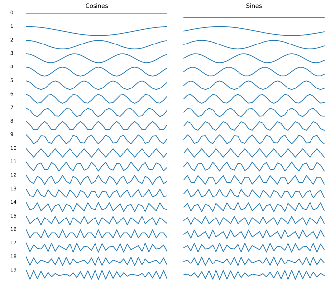
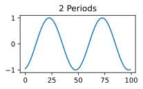

Week 4: The Discrete Fourier Transform
Chris Tralie
As we saw in module 8, it is possible to discover what frequencies are present in a waveform by multiplying by these frequencies and summing up the products at every sample. This is referred to as a "dot product," or in the context of periodic signals, as a "Fourier projection." We can do this at a whole range of frequencies to get something called the Discrete Fourier Transform (DFT), and that's what we're going to construct today in class.
Given a signal with N samples, the DFT reports the sum of products over all sines and cosines that go through an integer number of periods over N samples. In other words, if we're sampling a cosine \[ \cos(2 \pi f t) \] over the interval \[ t \in [0, 1) \] Then f should be a whole number. There are ceil(N/2) such sines and ceil(N/2) cosines that satisfy this, including the one that has a zero frequency (a constant 1 for cosine and a constant 0 for sine). For example, the table below shows the 20 unique sinusoids when N = 40
Your job will be to do a product of sums with each of these and to save the results into arrays, which you then plot. The starter code for your method should look something like this
And then you'll fill in and plot the cos_sums and sin_sums arrays for a variety of test signals. For example, if you call this method on a cosine that goes through one period over N samples, you should see the following plots (where the sines are numerically insignificant)

Once you've implemented the DFT and you're able to replicate the above result, try out the following signals, each with 100 samples
Part 1: A Sinusoid
What do you get when you apply this to the sinusoid \[ \cos(2 \pi f t - \phi) \] for a nonzero phi? What happens when you vary phi? What happens when f is not an integer?
Part 2: Sums of Sinusoids
What happens when you apply this to a sum of sinusoids at different frequencies?
Part 3: Sawtooth Waves
What happens when you apply this to sawtooth waves that go through 1 period, 2 periods, and 4 periods, as shown below? Can you characterize what happens as the period increases? Can you related this to anything we talked about last Friday?

|

|

|
Part 4: Square Waves
What happens when you apply this to square waves that go through 1 period, 2 periods, and 4 periods, as shown below? Can you characterize what happens as the period increases? Can you related this to anything we talked about last Friday?

|
 |

|